required <- c("adaptivetau",
"deSolve",
"magrittr",
"MASS",
"parallel",
"purrr",
"tibble")
to_install <- required[! required %in% row.names(installed.packages())]
if (length(to_install)) install.packages(to_install)Simulations
Packages
library(purrr)Functions
plot_line <- function(..., lwd = 2, col = 4) {
plot(..., type = "l", lwd = lwd, col = col)
}plot2 <- function(..., col = 4) {
plot(..., col = col)
}lines2 <- function(..., lwd = 2, col = 2) {
lines(..., lwd = lwd, col = col)
}abline2 <- function(..., lwd = 2, col = 2) {
abline(..., lwd = lwd, col = col)
}max_var <- function(x, var) {
max(unlist(purrr::map(x, magrittr::extract2, var)))
}mplot1 <- function(x, col = 4, ...) {
plot(NA, xlab = "time", ylab = "I",
xlim = c(0, max_var(x, "time")),
ylim = c(0, max_var(x, "I")))
purrr::walk(x, \(y) with(y, lines(time, I, col = col, ...)))
}mclapply2 <- function(...) {
parallel::mclapply(..., mc.cores = parallel::detectCores() - 1)
}I_at_t <- function(x, times) {
purrr::map_dbl(times, \(t) x$I[tail(which(x$time < t), 1)])
}combineI <- function(x, times, f = purrr::map) {
x |>
f(I_at_t, times) |>
as.data.frame()
}make_quantiles <- function(x, times, probs, f = purrr::map, ...) {
x |>
combineI(times, f) |>
apply(1, quantile, probs, ...) |>
t() |>
as.data.frame()
}polygon2 <- function(x, y1, y2, ...) {
polygon(c(x, rev(x)), c(y1, rev(y2)), border = NA, ...)
}mplot2 <- function(x, probs, times, col1, col2, f = purrr::map, ...) {
a <- make_quantiles(x, times, probs, f)
n <- length(probs)
b <- n / 2
m <- floor(b)
plot(NA, xlab = "time", ylab = "I",
xlim = c(0, max_var(x, "time")),
ylim = c(0, max_var(x, "I")))
purrr::walk(1:m,
\(x) polygon2(times, a[, x], a[, n + 1 - x], col = col1))
if (b %% 2) lines(times, a[, m + 1], col = col2, ...)
}mode_val <- function(x, ...) {
x <- density(x, ...)
x$x[which.max(x$y)]
}Continuous time deterministic
The numerical solver of the ODE version of an SIR model:
cont_det <- function(N, I, R, R0, gamma, times) {
deSolve::ode(
c(S = N - I - R,
I = I,
R = R),
times,
function(time, variables, parameters) {
with(as.list(c(variables, parameters)), {
incidence <- beta * I * S
recovered <- gamma * I
list(c(-incidence, # dS/dt
incidence - recovered, # dI/dt
recovered))})}, # dR/dt
c(beta = R0 * gamma / N,
gamma = gamma)) |>
unclass() |>
tibble::as_tibble()
}Let’s numerically solve:
cont_det_sim <- cont_det(N = 1000, I = 1, R = 0, R0 = 2, gamma = .2, times = 0:365)Let’s visualize this the epicurve from this simulation:
with(cont_det_sim, plot_line(time, I))
det_peak_value <- max(cont_det_sim$I)
det_peak_timing <- cont_det_sim$time[which.max(cont_det_sim$I)]
abline2(h = det_peak_value)
abline2(v = det_peak_timing)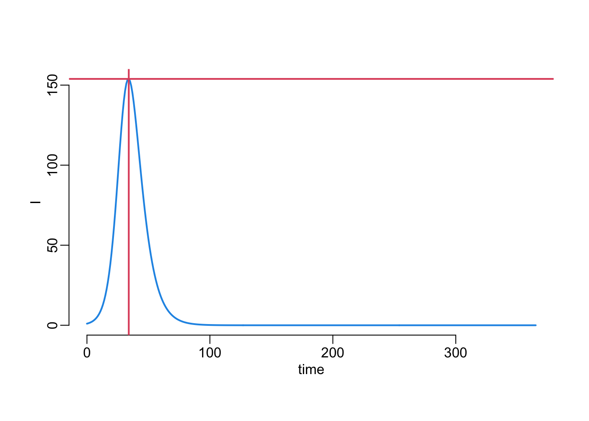
Continuous time stochastic
The simulator:
cont_sto <- function(N, I, R, R0, gamma, times) {
adaptivetau::ssa.exact(
c(S = N - I - R,
I = I,
R = R),
list(
c(S = -1, I = +1), # transmission
c(I = -1, R = +1)), # recovery
function(variables, parameters, time) {
with(as.list(c(variables, parameters)), c(
beta * S * I, # transmission
gamma * I))}, # recovery
c(beta = R0 * gamma / N,
gamma = gamma),
max(times)) |>
tibble::as_tibble()
}Two functions to run multiple simulations:
- in series:
cont_sto_series <- function(N, I, R, R0, gamma, times, n) {
replicate(n, cont_sto(N, I, R, R0, gamma, times), simplify = FALSE)
}- in parallel:
cont_sto_parallel <- function(N, I, R, R0, gamma, times, n) {
mclapply2(1:n, function(x) cont_sto(N, I, R, R0, gamma, times))
}A function to compare running time of the series and parallel computations:
comparison <- function(n1 = 30, n2 = 30, N = 1000, I = 1, R = 0, R0 = 2, gamma = .2,
times = 0:365) {
dplyr::bind_rows(
tibble::tibble(
type = "series",
n = n1,
time = map_dbl(1:n2,
~ system.time(cont_sto_series(N, I, R, R0, gamma, times, n1))[[3]])),
tibble::tibble(
type = "parallel",
n = n1,
time = map_dbl(1:n2,
~ system.time(cont_sto_parallel(N, I, R, R0, gamma, times, n1))[[3]])))
}Running the computations for running time comparison:
out30 <- map_dfr(c(1, 5, 10, 20, 40, 80, 160, 320), comparison)A function that plots the simulations times:
plot_simulation_time <- function(x) {
types <- unique(x$type)
with(x, plot(n, time, type = "n",
xlab = "number of repeats", ylab = "simulation time (seconds)"))
abline(v = pretty(x$n), col = "grey")
abline(h = pretty(x$time), col = "grey")
with(x[sample(1:nrow(x)), ],
points(jitter(n), time, col = as.numeric(as.factor(type)) + 1))
legend("topleft", legend = types, col = as.numeric(as.factor(types)) + 1, pch = 1)
}Plotting the simulation time in series and parallel as a function of the number of repeats:
plot_simulation_time(out30)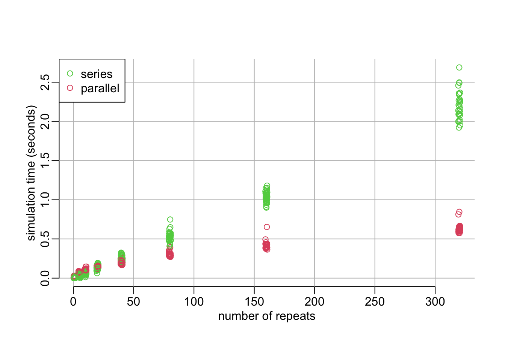
Let’s do the same with larger population sizes:
system.time(out60 <- map_dfr(c(1, 5, 10, 20, 40, 80, 160, 320), comparison, n2 = 60)) user system elapsed
863.169 255.215 419.945 plot_simulation_time(out60)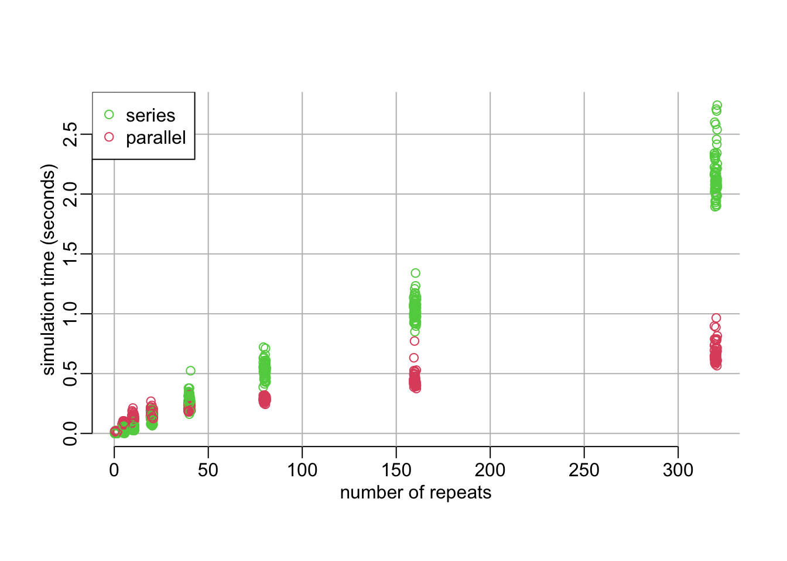
So, the parallel version is good in most of the cases.
cont_sto_sim <- cont_sto(N = 1000, I = 1, R = 0, R0 = 2, gamma = .2, times = 0:365)Let’s run multiple simulations in series:
cont_sto_sim30 <- cont_sto_series(N = 1000, I = 1, R = 0, R0 = 2, gamma = .2,
times = 0:365, n = 30)Visualizing the simulations outputs:
mplot1(cont_sto_sim30)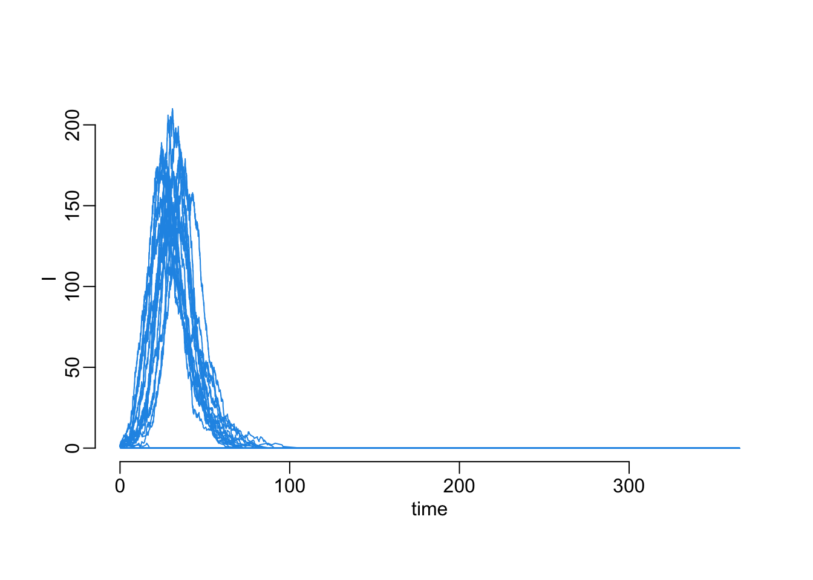
More simulations:
cont_sto_sim10000 <- cont_sto_parallel(N = 1000, I = 1, R = 0, R0 = 2, gamma = .2,
times = 0:365, n = 10000)Another way to look at the output:
mplot2(cont_sto_sim10000, seq(.1, 1, .1), 1:365, adjustcolor("black", .1), 2, lwd = 2,
f = mclapply2)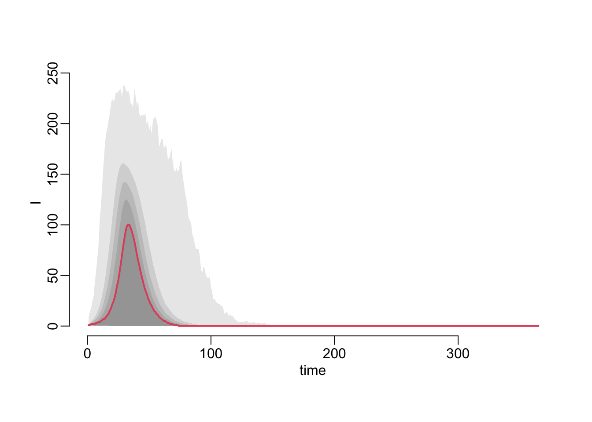
Looking at the peak values
cont_sto_sim10000 |>
purrr::map_dbl(~ max(.x$I)) |>
plot2(ylab = "peak value")
abline2(h = det_peak_value)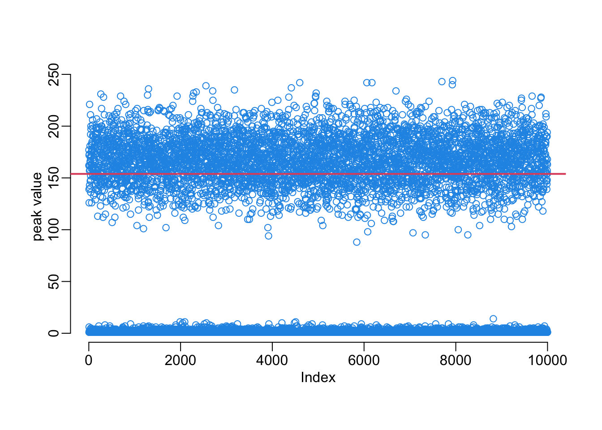
And a histogram version:
tmp <- cont_sto_sim10000 |>
purrr::map_dbl(~ max(.x$I)) |>
hist(100, plot = FALSE)
plot2(tmp, main = NA, xlab = "peak value", ylab = "frequency")
abline2(v = det_peak_value)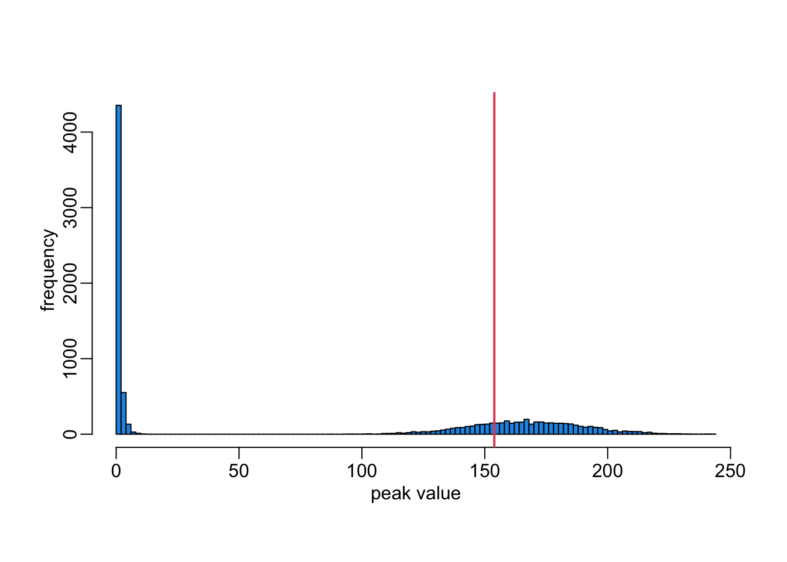
Same but with square-root transform:
tmp2 <- tmp
tmp2$counts <- sqrt(tmp2$counts)
plot2(tmp2, main = NA, xlab = "peak value", ylab = "frequency",
ylim = c(0, max(tmp2$counts)), yaxs = "i")
abline2(v = det_peak_value)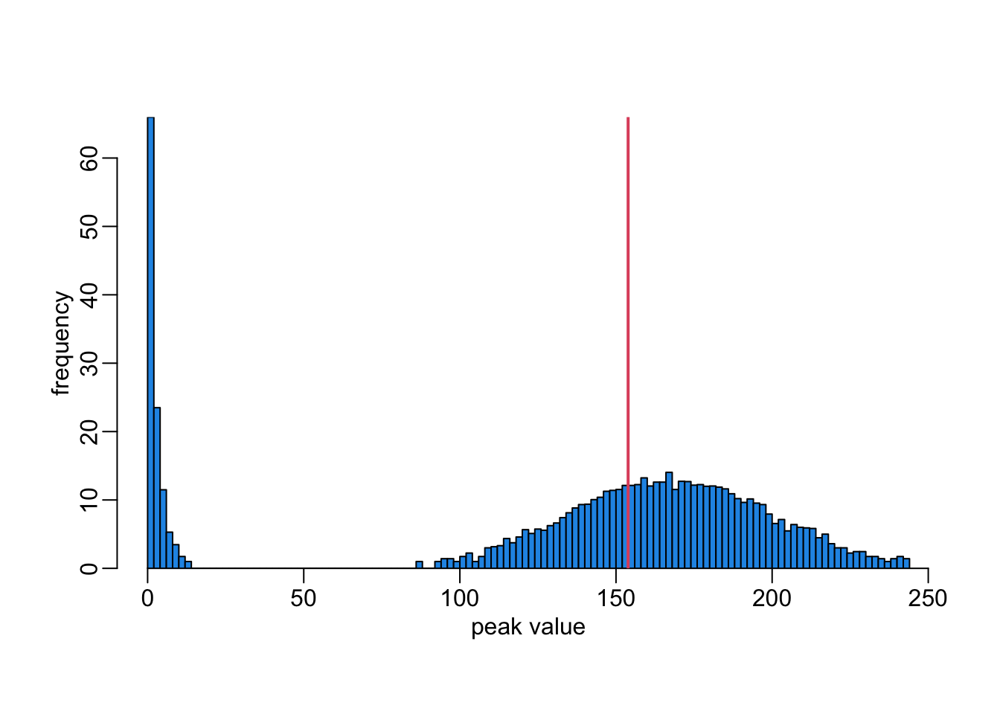
Looking at the peak timing:
peak_timing <- map_dbl(cont_sto_sim10000, ~ .x$time[which.max(.x$I)])
peak_value <- map_dbl(cont_sto_sim10000, ~ max(.x$I))
plot2(peak_timing, peak_value, xlab = "peak timing", ylab = "peak value")
abline2(h = det_peak_value)
abline2(v = det_peak_timing)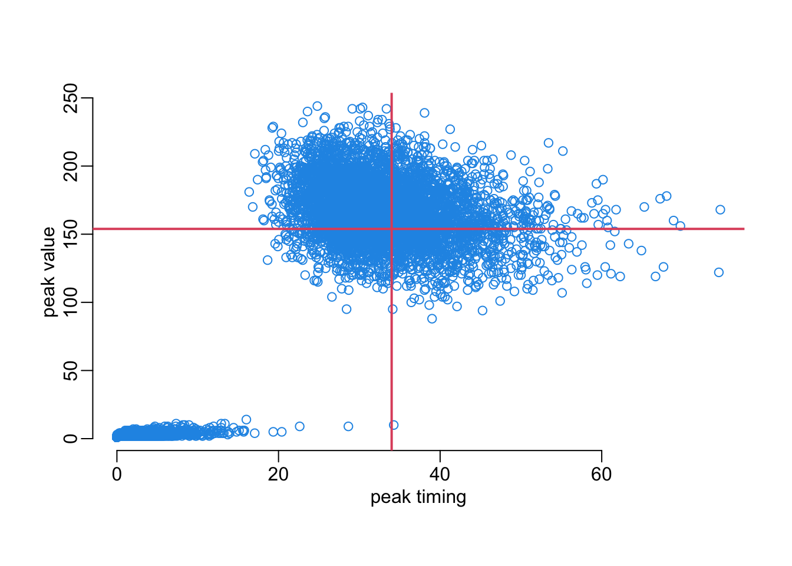
And an 2D density plot:
density2d <- MASS::kde2d(peak_timing, peak_value, n = 100)
density2d$z <- sqrt(density2d$z)
image(density2d, xlab = "peak timing", ylab = "peak value")
contour(density2d, add = TRUE)
abline2(h = det_peak_value, col = "white")
abline2(v = det_peak_timing, col = "white")
box(bty = "o")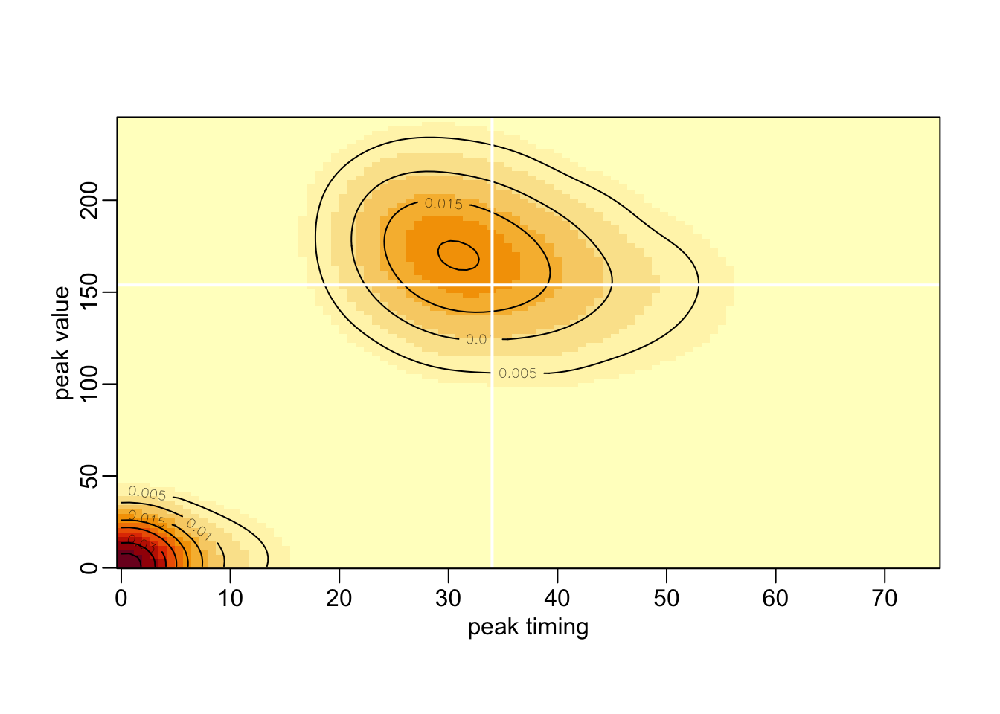
Removing the extinctions:
cont_sto_sim10000ne <- cont_sto_sim10000[purrr::map_dbl(cont_sto_sim10000,
~ max(.x$I)) > 50]The number of simulations without extinction:
length(cont_sto_sim10000ne)[1] 4918Plotting without the extinctions:
mplot2(cont_sto_sim10000ne, seq(.1, 1, .1), 1:365, adjustcolor("black", .1), 2,
lwd = 2, f = mclapply2)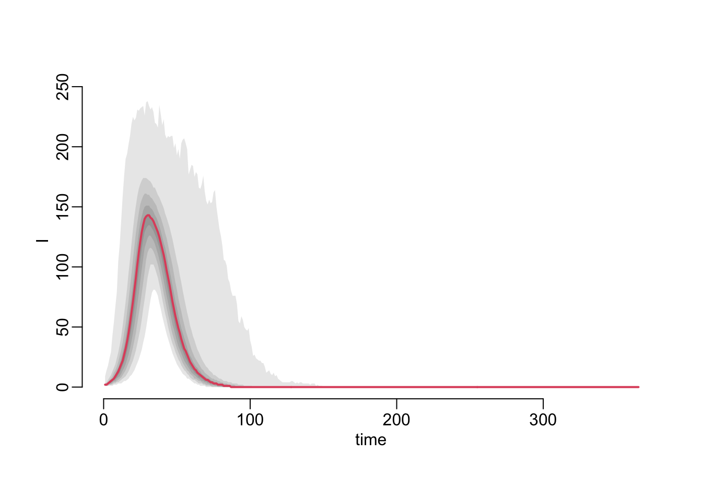
Verifying that we don’t have any identical simulations among those that do not go immediately to extinction:
cont_sto_sim10000ne |>
combineI(1:365, mclapply2) |>
t() |>
as.data.frame() |>
duplicated() |>
sum()[1] 0Comparing stochastic and deterministic:
tmp <- combineI(cont_sto_sim10000ne, 1:365, mclapply2)
cont_sto_sim10000ne_mean <- apply(tmp, 1, mean)
cont_sto_sim10000ne_median <- apply(tmp, 1, median)
cont_sto_sim10000ne_mode <- map_dbl(as.data.frame(t(tmp)), mode_val)Let’s look at it:
with(cont_det_sim, plot_line(time, I))
lines2(1:365, cont_sto_sim10000ne_mean)
lines2(1:365, cont_sto_sim10000ne_median, col = 3)
lines2(1:365, cont_sto_sim10000ne_mode, col = 1)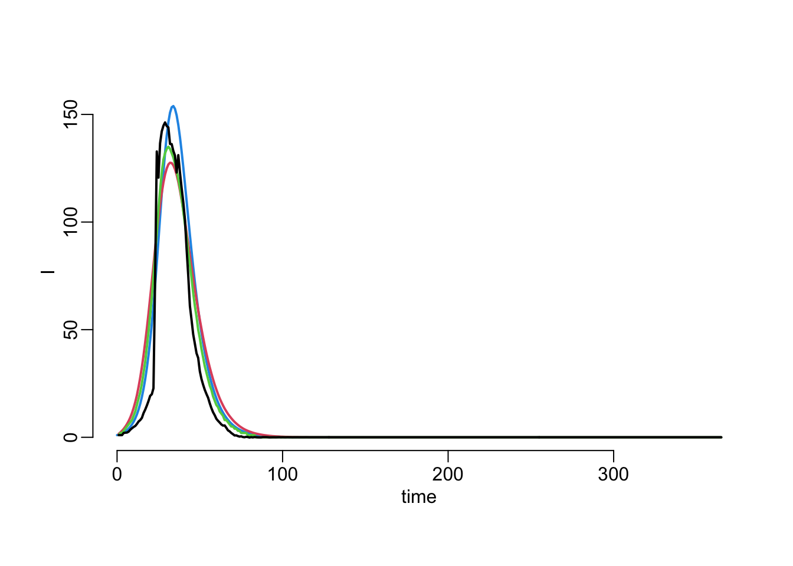
Let’s zoom in a bit:
with(cont_det_sim, plot_line(time, I, xlim = c(0, 100)))
lines2(1:365, cont_sto_sim10000ne_mean)
lines2(1:365, cont_sto_sim10000ne_median, col = 3)
lines2(1:365, cont_sto_sim10000ne_mode, col = 1)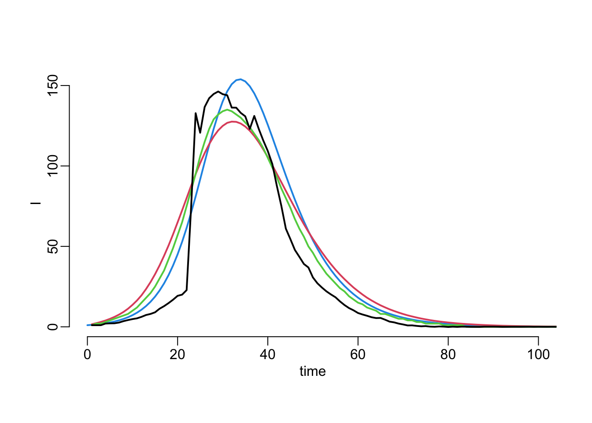
Plotting the timing of the non-extinct:
map_dbl(cont_sto_sim10000ne, ~ .x$time[which.max(.x$I)]) |>
density() |>
plot2(main = NA, xlab = "timing", ylab = "density", lwd = 2)
abline2(v = det_peak_timing)
Let’s now consider larger population sizes:
cont_sto_sim10000e4 <- cont_sto_parallel(N = 10000, I = 1, R = 0, R0 = 2, gamma = .2,
times = 0:365, n = 10000)
peak_timing_e4 <- map_dbl(cont_sto_sim10000e4, ~ .x$time[which.max(.x$I)])
peak_value_e4 <- map_dbl(cont_sto_sim10000e4, ~ max(.x$I))The deterministic equivalent:
cont_det_sim_e4 <- cont_det(N = 10000, I = 1, R = 0, R0 = 2, gamma = .2, times = 0:365)
det_peak_value_e4 <- max(cont_det_sim_e4$I)
det_peak_timing_e4 <- cont_det_sim_e4$time[which.max(cont_det_sim_e4$I)]And the comparison:
density2d_e4 <- MASS::kde2d(peak_timing_e4, peak_value_e4, n = 100)
density2d_e4$z <- sqrt(density2d_e4$z)
image(density2d_e4, xlab = "peak timing", ylab = "peak value")
contour(density2d_e4, add = TRUE)
abline2(h = det_peak_value_e4, col = "white")
abline2(v = det_peak_timing_e4, col = "white")
box(bty = "o")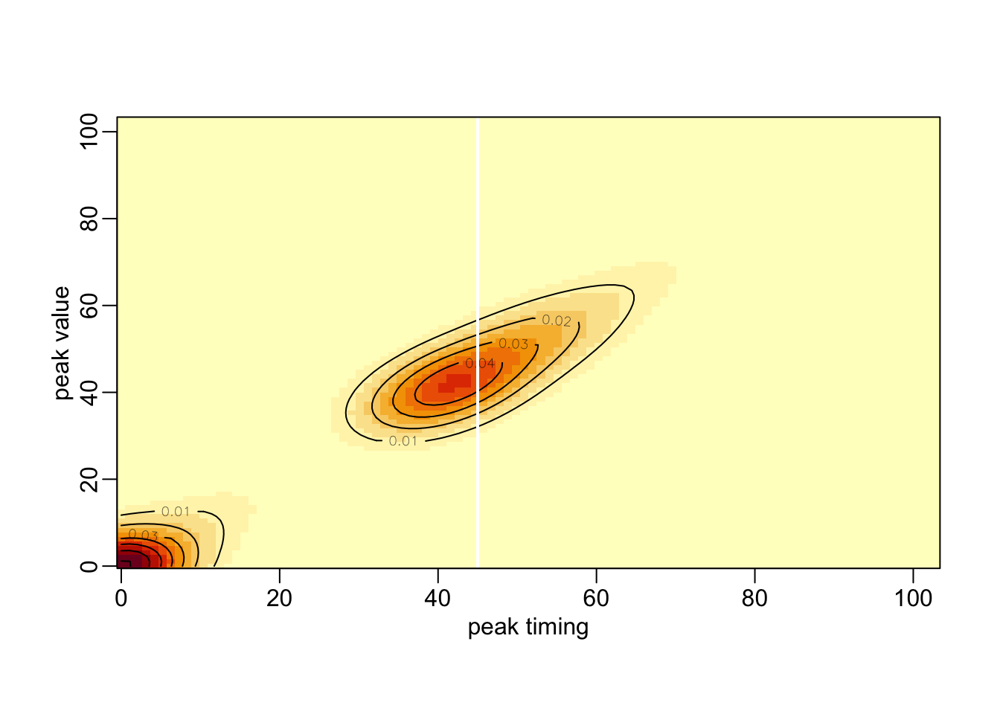
Let’s now try with smaller population size:
cont_sto_sim10000e2 <- cont_sto_parallel(N = 100, I = 1, R = 0, R0 = 2, gamma = .2,
times = 0:365, n = 10000)
peak_timing_e2 <- map_dbl(cont_sto_sim10000e2, ~ .x$time[which.max(.x$I)])
peak_value_e2 <- map_dbl(cont_sto_sim10000e2, ~ max(.x$I))
cont_det_sim_e2 <- cont_det(N = 100, I = 1, R = 0, R0 = 2, gamma = .2, times = 0:365)
det_peak_value_e2 <- max(cont_det_sim_e2$I)
det_peak_timing_e2 <- cont_det_sim_e2$time[which.max(cont_det_sim_e2$I)]
density2d_e2 <- MASS::kde2d(peak_timing_e2, peak_value_e2, n = 100)
density2d_e2$z <- sqrt(density2d_e2$z)
image(density2d_e2, xlab = "peak timing", ylab = "peak value")
contour(density2d_e2, add = TRUE)
abline2(h = det_peak_value_e2, col = "white")
abline2(v = det_peak_timing_e2, col = "white")
box(bty = "o")
opar <- par(mfrow = c(1, 3))
image(density2d_e2, xlab = "peak timing", ylab = "peak value")
contour(density2d_e2, add = TRUE)
abline2(h = det_peak_value_e2, col = "white")
abline2(v = det_peak_timing_e2, col = "white")
box(bty = "o")
image(density2d, xlab = "peak timing", ylab = "peak value")
contour(density2d, add = TRUE)
abline2(h = det_peak_value, col = "white")
abline2(v = det_peak_timing, col = "white")
box(bty = "o")
image(density2d_e4, xlab = "peak timing", ylab = "peak value")
contour(density2d_e4, add = TRUE)
abline2(h = det_peak_value_e4, col = "white")
abline2(v = det_peak_timing_e4, col = "white")
box(bty = "o")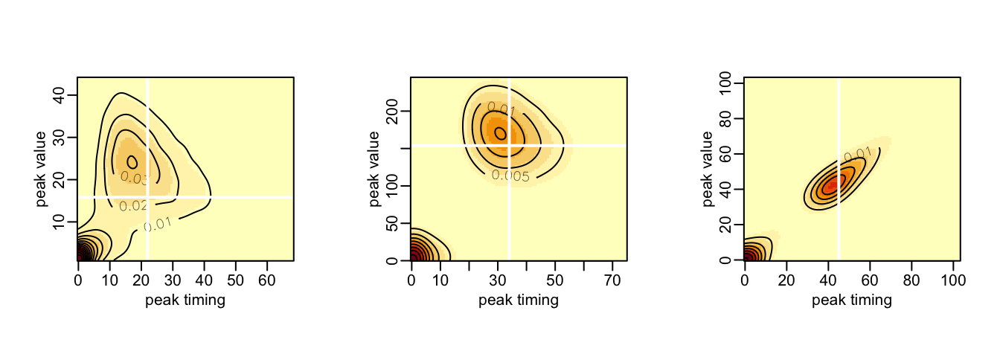
par(opar)